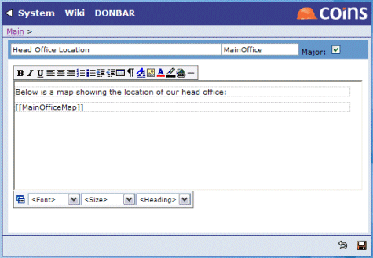

If you link to a topic that is an attachment and the attachment is a JPG or GIF, the image is shown inline in the topic. For example, to include an attachment MainOfficeMap on a topic, enter [[MainOfficeMap]].

This would display the map image in place of the link.
The attachment doesn't need to be attached to the topic you are updating, it can be an attachment on any topic.
You can show icons from the  button.
button.